数据链路层中根据MAC地址在一个局域网内传输帧，而网络层主要负责的是根据IP地址在不同子网内转发数据包。网关(Gateway) 就是一个子网连接到另一个子网的关口，实质上是一个具有路由功能的设备的IP地址，像生活中常见的无线路由器、启用了路由协议的服务器（实质上相当于一台路由器）、代理服务器（也相当于一台路由器），它们都可以称为网关。我们可以理解为广义的路由器和网关是等价的，网络层中技术可以称之为路由器技术。
路由算法
互联网是无数子网络共同组成的一个巨型网络，小子网包含在大子网内，源机器发送一个数据包后经过许许多多的路由后最终到达目标机器，而如何选择最优最高效最快最短的路由路径，就是路由算法来解决的。
距离矢量算法(Distance Vector Routing)
基本思路是：每个路由器维护一张表(即一个矢量)，表中列出了当前已知的到每个目标的最佳距离，以及所使用的链路。这些表通过邻居之间相互交换信息而不断被更新，最终每个路由器都了解到达每个目的地的最佳路径。
但是这个算法存在一个严重的缺陷：无穷计算问题，导致对坏消息的反应异常迟缓，当网络拓扑结构发生变化后该算法需要太长时间才能收敛到稳定状态。故在1979年后距离矢量算法就被链路状态路由算法代替，今天链路状态路由算法的变种算法——IS-IS或者OSPF已经成为大型网络或Internet应用最为广泛的路由算法。
链路状态路由算法(Link State Routing)
该算法的设计思想主要分为五个部分：
- 发现邻居节点；
- 设置链路成本；
- 构造链路状态包；
- 转发链路状态包；
- 计算到其他每个路由器的最短路径。
发现邻居
当一个路由器启动时，它的一个任务时找出哪些路由器时它的邻居，它只需在每一条点到点线路上发送一个特殊的 HELLO 数据包，线路另一端的路由器会返回一个全局唯一的自己名字。
设置链路成本
为了寻找两个路由间的最短路径，必须明确什么是最短。一般成本以距离、带宽、延迟作为度量。一种常用的选择是使成本与带宽成反比，例如，1Gbps 以太网的成本可能是1，而 100Mbps 以太网的成本可能是10，这样可以使得高容量的路径称为路由更好的选择。如果采用延迟作为成本，确定延迟最直接方法是通过线路给另一边发送一个特殊的 ECHO 数据包，要求对方立即发回，通过测量往返时间再除以2就可以得到一个合理的延迟估算值。
构造链路状态包

首先是发送方的 标识符(Identifier)，接着是一个 序号(Seq) 和 年龄(Age)，以及一个邻居列表和到这个邻居的延迟(这里以延迟作为成本)。
还需要确定什么时候构造数据包。一种做法是周期性地创建数据包，另一种做法是每当发生某些重要的事情时才创建数据包，比如当一条线路断掉或一个邻居节点停机时，或当它们重新恢复运行时，或当它们的特性发生了一定变化时。
分发链路状态包
这个阶段是链路状态路由算法中最技巧的部分，所有路由器必须快速并可靠地获得全部的状态包，如果不同的路由器使用了不同版本的拓扑结构，没有保持同步，那么它们计算出来的路由就会不一致。
当一个路由器刚加入一个路由网络中时，它使用泛洪法(即广播)将链路状态数据包分发给所有路由器。为了控制泛洪规模，每个数据包都包含了一个序号，同一个路由器每发出一次更新后的状态包，序号就逐一递增。路由器会在其路由表中记录下它所看到的所有(源路由器、序号)对，如果某个源路由器的新状态包到达，该路由器会在其路由表中保留记录并转发这个状态包；如果状态包重复，则拒绝接受；如果状态包的序号大于其路由表中来自这个源路由器的序列号，说明这个源路由器刚刚又分发了一个新的状态包，该路由器更新记录并转发；如果小于，说明有条慢的线路终于把这个源路由器次新的状态包发过来了，则它将被当做过时包而拒绝接受。
为了解决源路由器将序号增加到最大绕回0的情况，就使用一个32位的序号，这样即使每秒钟产生一个链路状态数据包，也需要137年才可能发生绕回，所以这种可能性可以忽略不计。
如果一个路由器崩溃了，那么它将丢失所有的序号记录表，这时它再从0开始，下一个状态包会被其它路由器当做重复或过时包而拒绝接受；如果一个序号传输错误，比如发送方发送的序号是4，中间产生错误，接收方看到的序号是65540，那么序号从5到65540的状态包都将被当做过时包而拒绝接受。这些问题会产生一个事实：一个路由器连续多次拒绝同一个源路由器的状态包后，其自己路由表上对这个源路由器的记录会长时间得不到更新。这样这些问题的解决方案就是：在每个状态包的序号之后包含一个年龄(Age)字段，并且每秒钟将年龄减1，当年龄字段的值被减到0时，来自源路由器的状态包就被丢弃，这样该源路由器的状态包再次到达这个路由器时，该状态包就会被当做新包而接受。
这个算法可以做一些改进更加健壮：当一个链路状态包被泛洪到一个路由器时，它并没有立即被排入队列等待传输，而是放在一个保留区等待一段时间。如果在这个数据包被转发出去之前，另一个来自同一个源路由器的链路状态包也到来了，那么就比较它们的序号。如果两个数据包的序号相等，则丢弃重复数据包；如果两者不相等，则丢弃老的包。
计算到其他每个路由器的最短路径
这个问题可以转化为一个网络图中任意两个节点之间的最短路径，即 Dijkstra算法。
通过上面的构造和分发链路状态包步骤后，每个路由器都可以获取所有路由器和其邻居的距离，并实时保持同步，权重以距离、带宽、延迟等来度量。
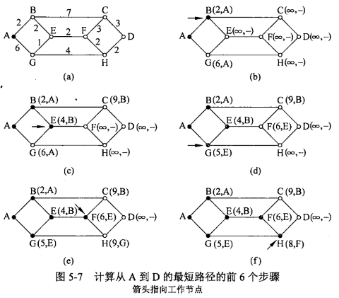
在初始阶段，所有的路径都不知道被标记为无限远，随着算法的不断进行，路径长度被确认。并且初始时，所有的节点都被标记为暂时的，当发现一个标的代表了从源节点到该节点的最短可能路径，该标记就变成了永久，以后不再改变，在寻找下一个永久节点时，只有暂时节点作为参考。
比如我们现在要找到从A到D的最短路径。开始时，将节点A标记为永久(在图中用一个实心圆表示)，然后依次检查每一个与A(工作节点)相邻的节点，并且用它们与A之间的距离重新进行标记。为了重构出最终路径，没当一个节点被重新标记时，也要标记处这个探测风作的触发节点(即前一个节点)。Node(length,previousNode)：Node表示当前节点，length表示该节点到源节点的目前最短距离，previousNode表示构建路径中的前一个节点。
在检查了每一个与A相邻的节点之后，检查整个图中全部具有暂时性标记的节点，并且使得其中具有最小标记的那个节点成为永久性的，如图b所示，这个节点就变成新的工作节点。
现在从B开始，检查所有与B相邻的暂时性节点，更新C(9,B)和E(4,B)。这时算法需要对整个图进行搜索，找到具有最小标记值得暂时性节点，这个节点将标记为永久性，成为下一轮的工作节点。在对C、E、G及D、F、H中标记值距离比较后，找到了E(4,B)，E标记为永久性，成为工作节点。
现在从E开始，对于每一个与E相邻的暂时性节点，如果节点E上的标记加上从E到该节点的距离小于该节点原来的标记，说明我们找到了一条更短的路径，所以需要重新标记该节点。检查所有与E相邻的暂时性节点，这时会更新F(6,E)，在更新G节点时，因为4+1<6，故更新G(5,E)，如图d。
接着全图搜图暂时性节点，找到最小标记值的节点G(5,E)，以此类推。更新H(9,G)，标记F(6,E)为工作节点，更新H(8,F)，标记H(8,F)为工作节点，更新D(10,H)，标记C(9,B)为工作节点，因9+3>10，故不更新D，最后标记D(10,H)为工作节点，结束算法。
下图给出了这个算法描述。全局变量n和dist描述了图，在shortest_path被调用之前对着两个变量初始化。代码中从终结节点t开始计算最短路径，而不是从源节点s开始，之所以选择向后搜索的原因是，每个及诶单都被标记了它的前任节点而不是继任节点，在输出时结果按顺序而不是倒序产生。这个算法主要分为两大部分：计算比较并更新邻居节点的标记值，找出下一个工作节点。
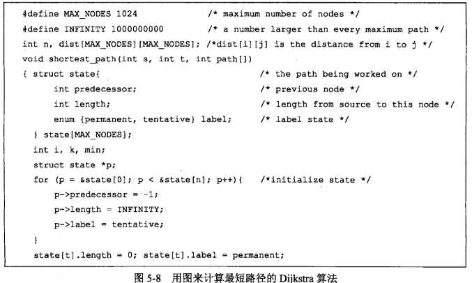
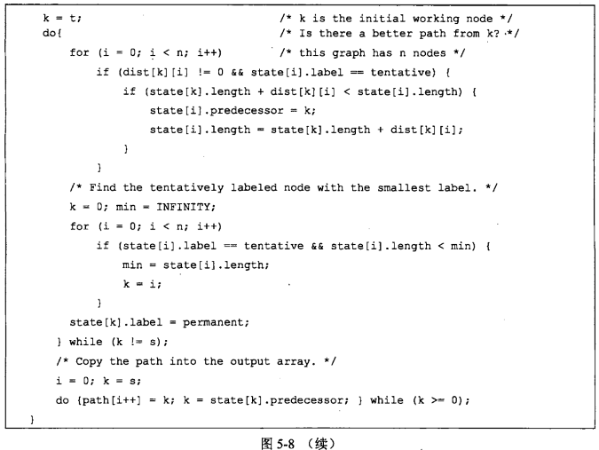
层次路由
随着网络规模的增长，路由器的路由表也成比例地增长，不断增长的路由表不仅消耗路由器内存，而且还需要更多的CPU时间来扫描路由表以及更多的带宽来发送有关的状态报告。当网络增长到一定时可能会到达某种程度，此时每个路由器不太可能再为其他每一个路由器维护一个表项，所以路由不得不分层次进行，就好像电话网络中的做法那样。
路由器被划分成区域(Region)，每个路由器知道如何将数据包路由到自己所在区域内的目标地址，但是对于其他区域的内部结构毫不知情，当不同的网络被相互连接在一起，就会将每个网络当做一个独立的区域，不必知道其他网络的拓扑结构。对于大型网络，可能有必要再将区域组织成簇(Cluster)，将簇组织成区(Zone)，将区组织成群(Group)等等。
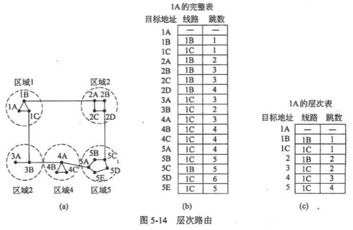
上图是一个两级层次例子，其中包含5个区域。如果不分层，路由器1A的完整路由表有17个表项，如图b；如果采用分级路由，1A的表就只有7个表项，可以根据目标地址的前缀来决定走那个区域。因此所有到区域2的流量都要经过1B-2A线路，其余的远程流量都经过1C-3B线路。
这样可以节省路由器的表空间，不过也会增加特定节点之间的路径长度。例如从1A到5C的最佳路径是通过1B经过区域2，但采用层次路由后，所有到区域5的流量都经过区域3，因为对于区域5中的大多数目标来说最佳路经是通过1C，这是更好的选择。
当单个网络变得非常大时，应该分多少层。Kamoun和Kleinrock在1979年研究发现，对于一个包含N个路由器的网络，最优的层数是lnN，每个路由器所需的路由表项是elnN个，他们还证明了由于分层路由而导致的平均路径长度的实际增长非常小，通常是可以接受的
移动主机路由
今天笔记本电脑的做法是当它们被转移到新的Internet位置，就过得一个新的网络地址，新老地址之间不存在任何关联，主机在移动旗舰无法保持与网络的连接，而是必须重新启动建立新的连接。
而手机使用流量发送接受数据包的做法是使用每个主机都有一个永久的所属地，称为 家乡地址(Home Address)。比如一个比较的发送者像发送一个数据包给家乡地址在上海的主机，而该主机在杭州，在杭州的移动主机获得一个本地网络地址，称为 转交地址，它可以把自己当前地址告诉给家乡位置的一台主机，这台主机称为 家乡代理。

首先在杭州的主机给上海的家乡代理发送一个带有转交地址的注册信息(第1步)，它是一个控制信息而不是一个数据报文。接下来北京的发送者发送一个数据包给移动主机，该数据包被路由到家乡地址(第2步)，因移动主机已经离家，故上海的家乡代理拦截该数据包，然后用一个新的头 封装(Encapsulated) 该数据包，并把捆绑后的结果发送给转交地址(第3步)，这种机制称为 隧道(Tunneling)。移动主机解开封装后的数据包并提取出来自发送者的数据包，最后它直接给发送者发应答数据包(第4步)。整个路由过程称为 三角路由(Triangle Routing)*。
作为第4步的一部分，发送者可借鉴当前的转交地址，通过隧道机制把随后的数据包直接发送给转交地址(第5步)，完全绕过家乡代理。如果移动主机移动时丢失了连接，则可以重新通过家乡地址随时来寻址到移动主机。
拥塞控制算法
网络中存在太多的数据包导致数据包被延迟和丢失，从而降低了传输性能，称为 拥塞(Congestion)。当注入负载的增加到超出网络的容量时，数据包花在等待积压在前面数据包排空的时间远远超过了允许其在网络中的最大生存期，因此不得不被扔掉需要重传。在这种情况下，相同数据包的副本再次通过网络传送，加重了网络负载，就会出现数据包重复丢失重复重传，这样导致网络性能骤降，出现 拥塞崩溃(Congestion Collapse)。
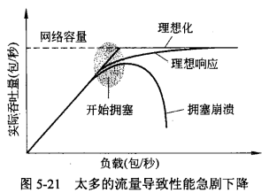
拥塞控制和流量控制有很大的差异：拥塞控制是确保网络信道能后承载所有到达的流量，这时一个全局性问题，涉及各方面的行为，包括所有的主机和路由器；流量控制只与特定发送方和特定接收方之间的点到点流量有关，确保一个快速发送方不会高速传输数据以至于淹没了慢速接收方。比如：在一个100 Gbps的光纤网络中，一台超级服务器给一台只有处理1Gbps速率能力的个人计算机传送一个大文件，这里没有拥塞(网络本身没有任何问题)，但流量控制十分重要，以便超级服务器经常停下来给个人计算机喘息的机会；在一个1 Mbps的网络中，有1000台计算机，其中一半的机器试图给另一半机器以100 kbps的速率传送文件，这里的问题并不是快速的发送方 会淹没慢速的接收方，而是交给网络的总流量超过了网络的处理能力。
控制拥塞的最有效方法是减少传输层注入网络的负载。拥塞控制和流量控制之所以常常被混淆的原因在于处理上述两个问题的最好方式都是迫使主机慢下来。因此，一台主机接受到的“减速慢行” 消息既可能来自不能处理负载的接收方，也可能来自不能处理负载的网络。
拥塞的出现意味着负载大于资源可以处理的能力，很自然会想到两个解决方案：增加资源或减少负载，这些解决方案通常应用在不同的时间尺度上，要么预先避免拥塞，要么一旦发生拥塞后作出反应。

流量感知路由
计算路由的目的是把热点地区的流量转移出去，最直接的方式是把链路权重设置成带宽(固定)、延迟、负载(可变)。把负载设置为权重是最好的，这样能及时缓解热点地区的拥塞情况，随着时间的推移，低负载的路由承载更多的流量，高负载的路由承载更少的流量，最终路由的负载高低情况相互转变，这样路由表可能会剧烈地摇摆不定，从而导致不稳定的路由和许多潜在的问题。
比较好的做法是以带宽和延迟作为优先权重，负载作为辅助权重，这样可以把流量慢慢迁移过去。
准入控制(Admission Control)
其基本思想非常简单：除非网络可以携带额外的流量而不会变得拥塞，否则不再建立新的连接，类似电话系统中，当一台交换机实际超载时，它也会采用准入控制的方法，不再送出拨号音。
流量调节
首先，路由器必须确定何时快要接近拥塞，最好在拥塞发生之前能确定。这样每个路由器可连续监测它正在使用的资源，三种可能的资源分别是输出线路的利用率、在路由器内缓冲的排队数据包，以及没有足够的缓冲而丢失的数据包数量。在这些可能性中第二个是最有用的，平均利用率没有考虑大多数链路的突发，在数据包丢失时拥塞早就已经形成。
路由器内部的排队延迟直接捕获了数据包经历过得任何拥塞情况，它在大部分时间应该很低，但当有一个突发流量产生积压时会跳跃。通过一个公式来计算排队延迟估计d，d(new)=α·d(old)+(1-α)s：s表示瞬时队列长度的样值，常数α决定路由器多快忘记最近的历史。每当d升高到某个阈值之上，路由器就要注意开始拥塞了，这时路由器必须及时把反馈信息传递给造成拥塞的发送方。
抑制包(Choke Packet)
最直接的方式是直接告诉发送方。路由器随机选择一个拥塞的数据包，给该数据包的源主机返回一个抑制包，同时给该拥塞数据包添加标记，使其在后续经过的路由器中不会产生重复的抑制包。当源主机收到了抑制包，按照要求减少发送给目标的流量，比如说减少50%。
显式拥塞通知(ECN, Explicit Congestion Notification)
现代Internet使用了显式拥塞通知设计方案。路由器在转发的任何数据包上，用IP数据包头中两位设置为某个标志位，打上标记发出信号，表明它正在经历着拥塞，直到接收方收到该数据包，得知有个拥塞已经发生，在它发送应答包时顺便告知发送方，然后发送方可以向以前那样紧急刹车降低传输速率。
为了解决拥塞通知到达源目标之前，依然有高速流量发向目标机器的问题，好的方案是使抑制信息在沿每一跳都发挥作用，抑制信息到达某路由器的上游时，就使上游路由器降低流量给下游，而不是在抑制信息到达源机器才降低流量。
负载脱落(Load Shedding)
当以上任何一种方法都无法消除拥塞时，就必须丢弃产生淹没危险的数据包，称为负载脱落。
为了确定何时开始丢弃数据包，一个流行算法称为 随机早期检测(RED, Random Early Detection)，当某条链路上的平均队列长度超过某个阈值时，该链路被认为即将拥塞，这时路由器随机丢弃一小部分数据包，受影响的发送方就会发现丢包，然后传输协议将放慢速度。因此丢失的数据包起到了传递抑制包的同样作用，但却是隐含的，无须路由器发送任何显式信号。这个算法用在主机不能接收显式信号的环境里。
关键的问题是选择丢弃哪些数据包，首选的方案可能取决于使用网络的应用程序类型。对于文件传输，旧的数据包价值要高于新的数据包，因为丢弃旧的数据包只会迫使接收方做更多的工作来缓冲它已经接收但不能使用的数据；对于实时媒体流，新的数据包价值超过老的数据包，因为如果数据包被延迟并且错失了给用户的播放时间，则该数据包就变得一无所用。前一种策略(即旧的比新的好)通常称为葡萄酒(Wine)策略，而后一种策略(即新的比旧的好)通常称为牛奶(Milk)策略，因为大多数人更愿意饮用新鲜牛奶和品尝陈年葡萄酒。
更智能的卸载方式需要发送方的合作。一个例子是携带路由信息的数据包，如果丢失就会丢失网络连接，故它们比普通数据包要重要；另一个例子是视频压缩算法，如MPEG，会定期发送全帧，然后发送一系列与上一个全帧的差异帧，在这种情况下，应该优先丢弃哪些属于差异帧的数据包，因为未来的工作依赖于之前的那个全帧。为了实现智能丢弃，应用程序必须在数据包上打上标记指示重要级。当不得不丢弃数据包时，路由器可以首先丢弃重要性最轻一类数据包，然后是次重要一类数据包，以此类推。
服务质量
生活中存在一些应用和客户对网络性能保障有很强的需求，而不仅仅只是在当前情况下尽力而为，特别是多媒体应用往往需要具备最小延迟和最大吞吐量条件才能正常工作。而服务质量(QoS, Quality of Service)可有四个主要参数来表示：带宽、延迟、抖动(延迟的变化即标准方差)和丢失。
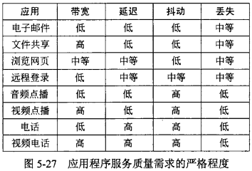
流量整形(Traffic Shaping)
为了解决流量的突发性，需要调节数据流的平均速率。

漏桶算法(Leaky Bucket Algorithm)：如图b所示，一个底部有小洞的桶，水流出桶是个恒定速率，一旦水满就会溢出，初始时桶中没有水。向网络中发送数据包，如同向桶中灌水，接收方能接受消费的数据包速率如同流水速率。
令牌桶算法(Token Bucket Algorithm)：如图c所示，与漏桶相反，向网络中发送数据包如同从桶中取水或令牌，初始时桶中水是慢的，如果桶是空的，就必须等待更多的水或令牌达到桶中才能发送另一个数据包。
漏桶和令牌桶限制了一个流的长期速率(即漏水速率或水龙头速率R)，但允许其短期突发某个最高调节长度(即桶的容量B,路由器缓冲区大小)，大量的突发数据将被一个漏桶流量整形器进行平滑处理，以便减少网络拥塞。
包调度(Packet Scheduling)
加权公平队列(Weighted Fair Queueing)：路由器为每条输出线路设置单独队列，当线路空闲时循环扫描各个队列，取出第一个数据包发送。这个算法会通过每个队列中每个数据包的准备出发时间和长度来计算出到达完成时间，选择当前完成时间最小值的数据包发送。为了避免给所有主机相同的优先级，需要给每条线路设置不同的权重。
网络互联
通过IP协议解决了寻找不同的子网并发送数据包的问题，形成了当今的Internet。
网络类型不同
然而在网络内传输同一个数据包首先需要解决的是处理网络类型的不同。比如发送方在以太网上，接收方在无线网中；在一个不支持组播的网络上把数据包分发给一组用户；不同网络规定的最大数据包尺寸不同；从一个面向连接网络传输到无连接网络，数据包达到的顺序可能会混乱。经过一些努力可以解决这些问题，例如，为每个接收方生成单独的数据包替代组播；大数据包被拆分，分段发送，然后再重组还原；接收端缓冲收到的数据包，并按顺序递交它们。
而通过在不同网络中构造一个 公共网络层，可以翻译和转换成每个类别网络的数据包。比如把一个数据包从无线网发到以太网，在到达两个网络的网关时，数据包从帧中提取出来，802.11帧头被丢弃，公共网络层必须用Ethernet帧头封装该数据包，由于数据包台长无法通过以太网发送，它被拆分为两部分，每一部分被放入Ethernet帧头并被发送到目的地的Ethernet地址中，在接收方，剥掉每个帧的以太网帧头，将数据包内容重新组合。
公共网络层解决了数据链路层类型不同的问题，隧道(Tunneling)技术 处理网络层类型不同的问题。
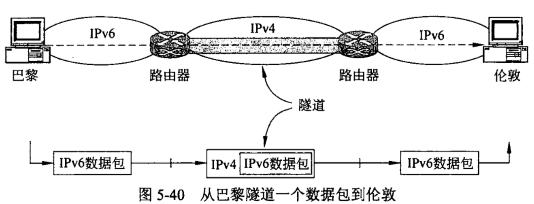
如上图，解决在源机器和目标机器都使用IPv6，有中间路由使用IPv4的问题，就是用一个IPv4头封装IPv6数据包，传输过中间路由时再把原来的IPv6数据包提取出来，发送给最终的目标机器。隧道被广泛用于连接那些使用其他网络而被隔离的主机和网络，虚拟专用网络(VPN, Virtual Private Networks) 就是使用隧道技术的简单覆盖网络。
在对数据包进行分段重组时也有不用的策略。一种解决办法是允许路由器将数据包拆分成段，如果一个数据包通过一系列的小数据包网络时，就会出现需要多次被分段和重组的问题；另一种解决办法是在任何一个中间路由器上避免分段操作，这种策略被现代Internet所采用，被称为 路径MTU发现(Path MTU Discovery)。其工作原理是：只允许源端把数据包分好段大小，每个IP数据包头设置一个比特标识，指示不允许对该数据包实施分段操作，如果一个路由器接收的数据包太大，它就生成一个报错数据包并发送给源端并丢弃该数据包，当源端收到报错数据包，它就使用报错数据包携带的信息重新将接下来的包分段，每个段足够小到报错路由器能处理。如果沿着路径前进又遇到一个要求段更小的路由器，那么重复上述过程，最终源端知道应该发送多长的数据包才能到达目标机器。该方法的缺点是会增加发送数据包的启动延迟。
IPv4
每个IPv4数据报包含一个头和一个有效净荷。
报头
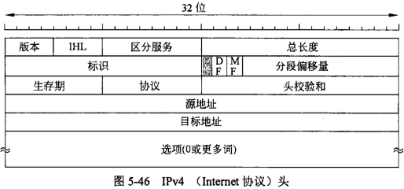
报头由一个20字节的定长部分和一个可选变长部分组成，如上图。IP数据报头的传输从左到右并从上到下，Version字段的高序字节最先被传送出去，即Big-Endian 网络字节序(所有网络协议都是采用big-endian的方式来传输数据的，所以有时我们也会把big-endian方式称之为网络字节序。在Little-Endian字节序机器上，比如Intel x86计算机，在传输和接收时需要进行字节顺序的软件转换。这两种字节序顺序和CPU架构有关，因little-endian的地址偏移和字节数是对应关系，big-endian刚好是相反的，在变量指针转换或精度转换时，big-endian会经常移动字节顺序，半加器在进行运算时，频率做不上去，这会增加计算机的工作量，而little-endian地址保持不变，计算机中的某些计算可以变得更加简单和快速)。目前看来是 Little-Endian字节序 是更好的选择成为主流了，但在设计IP协议时没有人能预测到今天little-endian流行计算世界。
Version - 版本字段记录数据报属于哪个版本协议，IPv4主宰者今天的Internet，事实上，IPv6已经被定义了二十多年，用来解决IPv4网络地址有限已经被分配完的问题。
IP Header Length(IHL) - 指数据报协议头长度，以32bit长度为单位，最小值为5，即5*32bit=20byte；最大值为15，即报头最长为60字节。
Differentiated Services - 区分服务，最初称为Type-of-Service(服务类型)。这些8位字段用于分配优先级、延迟、吞吐量以及可靠性，前6位用来标记服务类别，如加速服务和确保服务；后2位用来携带显式拥塞通知信息，比如数据包是否经历了拥塞。
Total Length - 指定整个 IP 数据包的字节长度，包括数据和协议头。其最大值为65535字节，典型的主机可以接收576字节的数据报。
Identification - 标识字段的用途是让目标主机确定一个新到达的分段属于哪一个数据报，同一个数据报的所有段包含同样的标识值。
Flags - 这两个1位字段与分段有关。DF代表“不分段”(Don’t Fragment)，它不允许路由器分割该数据报；MF代表“更多的段”(More Fragment)，除了最后一个段，其他所有段都必须设置这一位，这样可以让接收方知道什么时候一个数据报的所有分段都已经到达了。
Fragment Offset - 分段偏移量字段指明该段在当前数据报中的位置，由于该字段有13位，所以每个数据报最多有8192个段。
第二行的3个字段协同工作来描述分段操作。
Time to Live(TTL) - 生存期字段是用于限制数据包生存期的计数器，单位为秒，最大值为255秒。每经过一跳就会递减，当它递减到0时，数据包就被丢弃，这样确保数据包无止境的环路过程。
Protocol - 指出在IP处理过程完成后递交给哪种上层协议接收数据包，比如TCP或UDP。
Header Checksum - 用自己的校验和加以保护，帮助确保 IP 协议头的完整性。
Source Address - 源主机IP地址。
Destination Address - 目标主机IP地址。
Options - 允许 IP 支持各种选项。
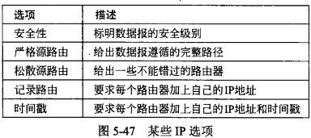
IP地址
IPv4的地址是32位，Internet上每台主机和每个路由器都有一个IP地址。它并不真正指向一台主机，而是指向一个网络接口，所以如果一台主机在两个网络上，它必须有两个IP地址。生活中，大多数主机都连在一个网络，因而只有一个IP地址；路由器有多个接口，从而有多个IP地址。
每个32位IP地址由连续的高位网络地址和低位主机地址组成，用点分十进制表示，如128.208.52.78，每个点之间为8位1字节，取值范围为0~255。 子网掩码(Subnet Mask) 用来确定子网，也是32位，在二进制格式中对应网络地址是1主机地址是0，网络地址前缀可以简单地由长度描述，比如“/16”，IP地址通过和子网掩码 进行 AND 并运算，就能计算出其网络地址，比如子网掩码为255.255.255.0 (/24)和上面IP地址AND，得出子网地址为128.208.52.0。这样源主机所在的子网只需根据网络地址前缀就可以找到目标机器所在的子网。

特殊IP地址：全0或0.0.0.0是最低的地址，由主机在启动时使用，意味着“这个网络”或者“这个主机”；全1或255.255.255.255是最高的地址，标识所有主机，用来广播；01111111 xxxxxxxx xxxxxxxx xxxxxxxx或127.xx.yy.zz保留给回环测试用，发送到该地址的数据包并没有被真正放在线路上，它们如同入境数据包一样在本地处理，做过Web的同学在进行本地测试配置host时经常使用127.0.0.1或localhost。

划分子网：
为了避免冲突，网络地址由ICANN组织管理，它把部分地址空间授权给各区域机构，这些机构再把IP地址发放给ISP和其他公司。
例如，给一所大学的计算机系分配了一个/16地址空间，其可分配65536台主机地址，当电子系再申请一个/16地址时显然是一种浪费，这时就通过 子网划分(Subnetting) 在内部将一个网络块分成几个部分供多个内部网络使用，但对外世界仍像单个网络一样。假设我们把块的一半(一个/17)分配给计算机系，四分之一(一个/18)分配给电子系，八分之一(一个/19)分配给艺术系，剩余的八分之一未分配。这里的竖线(|)表示网号和主机部分的边界。
计算机系：10000000 11010000 1|xxxxxxx xxxxxxxx
电子系： 10000000 11010000 00|xxxxxx xxxxxxxx
艺术系： 10000000 11010000 010|xxxxx xxxxxxxx
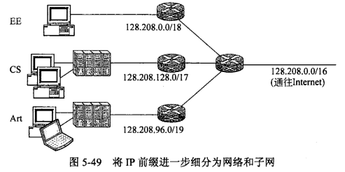
当数据包到达大网络时，路由器会根据该数据包的目标地址和每个子网的子网掩码进行AND操作，然后检查结果是否匹配对应子网的网络前缀地址，最终能找到唯一的一个子网。
对于网络外面，子网的划分是不可见的，因此分配一个新的子网不需要联系ICANN或者改变任何外部数据库。
NAT(Network Address Transfer, 网络地址转换)
当一个国家使用的主机总数超多2^31即21.5亿左右，就会发生IPv4地址重复的问题，对于中国来说，许多人除了家里一台台式机、笔记本，公司有一台计算机外，还有几台手机和Pad，现在很容易达到这个IP地址重复的条件了。对于整个Internet而言，长期的解决方案是迁移到有128位地址的IPv6。不过这个迁移过程有点缓慢可能需要很多年才能完成，为了在这期间解决地址短缺问题，今天普遍使用的快速方案是 网络地址转换。
NAT的基本思想是ISP为每个公司或组织分配一个IP地址来传输Internet流量，即我们常说的 公网IP，而在网络内部，每台计算机有唯一的IP地址用来路由内部流量，即 内网IP。当网络中一台主机要发送数据包时，数据包经过ISP时必须执行一个地址转换，把唯一的内部IP地址转换成那个共享的公共IP地址。
内网IP使用了IP地址的三个范围，已经被声明为私有化，任何网络可以在内部随意地使用这些地址，但这些地址不能出现在Internet上。这3个保留的地址范围为：
10.0.0.0 ~ 10.255.255.255/8(00001010 xx xx xx) (16,777,216个主机)
172.16.0.0 ~ 172.31.255.255/12(10101100 0001xxxx xx xx) (1,048,576个主机)
192.168.0.0 ~ 192.168.255.255/16(11000000 10101000 xx xx) (65,536个主机)

比如一台内部IP为10.0.0.1的主机发送一个数据包时，该数据包首先要通过一个NAT盒子(NAT box)，该盒子将内部IP源地址转换成该该客户所拥有的真实IP地址198.60.42.12。NAT盒子通常与防火墙组合成一个单一设备，或集成到路由器或Modem中。
当应答数据包返回时，本质上它的目标地址是公网IP 198.60.42.12，为了解决到底路由到那个具体的主机，使用了传输层中TCP或UDP端口，如TCP中，它指示了连接从哪里开始以及到哪里结束。
IPv6
IPv6在无限量地址分配、包头简化和安全性做了很好的改进。
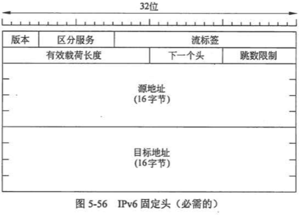
IPv6头是固定的共有40字节。其中Version-版本总是6；IPv6可以有额外的扩展头，Next Header-下一个头，指明了当前头之后还有哪种扩展头(当前定义了6种)，如果当前头是最后一个IP头，那么下一个头字段指定了该数据包将被传递给哪个传输协议处理(比如TCP或UDP)。
格式： IPv6一共有16字节128 bit，分为8组，每一组4个十六进制数字，组之间用冒号隔开，比如：8000:0000:0000:0000:0123:4567:89AB:CDEF。规则一：在一个组内可以省略前导0，因此0123可以写成123；规则二：以组为单位，连续的0可以用一对冒号来代替，因此上面的地址可以写成：8000::123:4567:89AB:CDEF。
相对于IPv4，因为IPv6头有固定的长度40字节，去掉了IHL字段；因为Next Header字段指明了最后的IP头后面跟的是什么，Protocol字段也被去掉了；因为所以遵从IPv6的主机都能够动态地确定将要使用的数据包长度，如路径MTU发现算法，故所有与分段有关的字段都被去掉了；因计算校验和会极大的降低性能，且数据链路层和传输层都有校验和，故Checksum也被去掉了。去掉了这些特性后就会得到一个精简快速的网络层协议。
Extension Header(扩展头)： 目前定义了6中扩展头，如下图。如果有多个扩展头出现，它们必须直接跟在固定头部的后面，而且最好使用表中列出的顺序。

DHCP(Dynamic Host Configuration Protocol, 动态主机配置协议)
现在大多数计算机都采用 动态IP地址，指计算机开机后会自动分配到一个IP地址，不需要人为设定静态IP地址。它使用的协议就是DHCP协议，在每个子网中必须有一个DHCP服务器来负责地址配置，新计算机加入网络时就必须向DHCP服务器发送一个 DHCP DISCOVER 请求数据包，申请IP地址和相关的网络参数。DHCP服务器为该主机分配一个空闲的IP地址，通过 DHCP OFFER 包返回给主机。
DHCP协议属于应用层协议，建立在UDP协议之上，所以整个数据包是这样的：
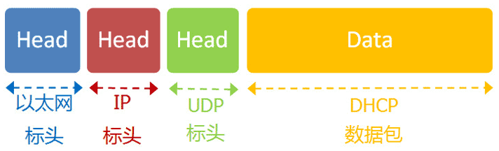
- 最前面的“以太网标头”，设置请求方(本机)和接收方(DHCP服务器)的MAC地址。请求方就是本机网卡的MAC地址，这时不知道DHCP服务器的MAC地址，就填入一个广播地址：FF-FF-FF-FF-FF-FF。
- 后面的“IP标头”，设置本机和DHCP服务器的IP地址。这时这两者都不知道，于是本机的IP地址就设为
0.0.0.0，服务器的IP地址设为广播地址255.255.255.255。 - 最后的“UDP标头”，设置双方的端口。这里是DHCP协议规定好的，请求方是68端口，接收方是67端口。
这个数据包构造完成后，就可以发出了。以太网是广播发送，同一个子网络的每台计算机都收到了这个包。因为接收方的MAC地址是FF-FF-FF-FF-FF-FF，看不出是发给谁的，所以每台收到这个包的计算机，还必须分析这个包的IP地址，才能确定是不是发给自己的。当看到发出方IP地址是0.0.0.0，接收方是255.255.255.255，于是DHCP服务器知道”这个包是发给我的”，而其他计算机就可以丢弃这个包。
接下来，DHCP服务器读出这个包的数据内容，分配好IP地址，发送回去一个”DHCP响应”数据包。这个响应包的结构也是类似的，以太网标头的MAC地址是双方的网卡地址，IP标头的IP地址是DHCP服务器的IP地址（发出方）和255.255.255.255（接收方），UDP标头的端口是67（发出方）和68（接收方），分配给请求端的IP地址和本网络的具体参数则包含在Data部分。
新加入的计算机收到这个响应包，于是就知道了自己的IP地址、子网掩码、网关地址、DNS服务器等等参数。
IP地址的自动分配有个问题，就是从地址池中去除一个IP地址分配给主机能用多久。为了解决主机离开网络，没有把分配给它的IP地址返回给DHCP服务器，那么地址将永久丢失的问题，可以为每个分配的IP地址指定一段固定时间，称为 租赁(Leasing)。在租赁期满前，主机必须请求DHCP续订，如果没有提出续订请求或请求被拒绝，主机就那么使用以前分配给它的IP地址。
有了 IP 地址，为什么还要用 MAC 地址？
大致总结为：1.在自动分配IP地址使用DHCP协议时需要MAC地址；2.数据包传输时需要终点地址(Final destination address)和下一跳地址(Next hop address)，IP地址本质上是终点地址，它在跳过路由器（hop）的时候不会改变，而MAC地址则是下一跳的地址，每跳过一次路由器都会改变，MAC地址起到了记录下一跳的信息的作用；3.分层实现。
ARP(Address Resolution Protocol)-地址解析协议
ARP是根据IP地址获取物理地址的一个TCP/IP协议，一般认为其属于网络层协议。
因为IP数据包是放在以太网数据包里发送的，所以我们必须同时知道两个地址，一个是对方的MAC地址，另一个是对方的IP地址。通常情况下，对方的IP地址是已知的，但是我们不知道它的MAC地址。
所以，我们需要一种机制，能够从IP地址得到MAC地址。
这里又可以分成两种情况。第一种情况，如果两台主机不在同一个子网络，那么事实上没有办法得到对方的MAC地址，只能把数据包传送到两个子网络连接处的”网关”(gateway)，让网关去处理。
第二种情况，如果两台主机在同一个子网络，那么我们可以用ARP协议，得到对方的MAC地址。ARP协议也是发出一个数据包(包含在以太网数据包中)，其中包含它所要查询主机的IP地址，在对方的MAC地址这一栏，填的是FF:FF:FF:FF:FF:FF，表示这是一个”广播”地址。它所在子网络的每一台主机，都会收到这个数据包，从中取出IP地址，与自身的IP地址进行比较。如果两者相同，都做出回复，向对方报告自己的MAC地址，否则就丢弃这个包。
总之，有了ARP协议之后，我们就可以得到同一个子网络内的主机MAC地址，可以把数据包发送到任意一台主机之上了。
总结
网络层的主要功能是为每台主机分配唯一IP地址并建立子网，找到世界任何两台计算机并计算路由实现数据通信，同时进行拥塞控制提高服务质量。
参考链接：《计算机网络（第5版）》 AndrewS．Tanenbaum
互联网协议入门（一）
互联网协议入门（二）